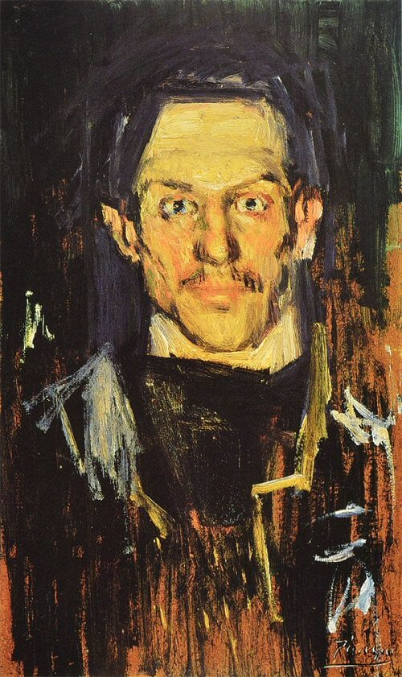
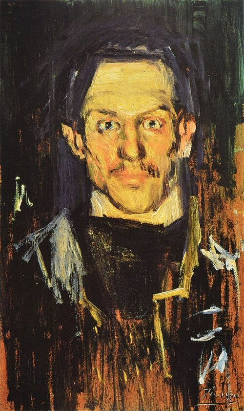

Pablo Piccaso
Pablo Ruiz Picasso (25 October 1881 – 8 April 1973) was a Spanish painter, sculptor, printmaker, ceramicist and theatre designer who spent most of his adult life in France.
Regarded as one of the most influential artists of the 20th century, he is known for co-founding the Cubist movement, the invention of constructed sculpture, the co-invention of collage, and for the wide variety of styles that he helped develop and explore.
Among his most famous works are the proto-Cubist Les Demoiselles d'Avignon (1907), and Guernica (1937), a dramatic portrayal of the bombing of Guernica by German and Italian air forces during the Spanish Civil War.Picasso demonstrated extraordinary artistic talent in his early years,
painting in a naturalistic manner through his childhood and adolescence.
During the first decade of the 20th century, his style changed as he experimented with different theories, techniques, and ideas. After 1906,the Fauvist work of the slightly older artist Henri Matisse motivated Picasso to explore more radical styles, beginning a fruitful rivalry between the two artists, who subsequently were often paired by critics as the leaders of modern art.
 
